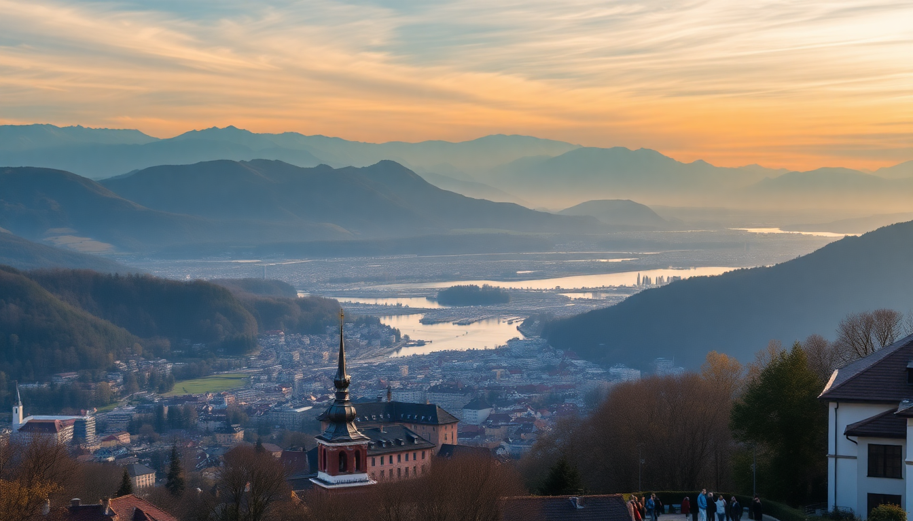

10-Day Switzerland Itinerary: Zurich to Geneva by Train

I spent ten days hopping between five Swiss cities by train, and here’s the honest version: you can cover a lot of ground without feeling like you’re sprinting. The Swiss Travel Pass makes it simple, the trains run like clockwork, and the scenery is genuinely ridiculous. This itinerary assumes you’re starting in Zurich and ending in Geneva, with stops in Lucerne, Interlaken, and Zermatt in between. No fluff, just the logistics that worked for me.
Is the Swiss Travel Pass worth it for this route?
Yes, if you’re doing five cities in ten days. I bought the 8-day consecutive pass, and it covered every train between cities plus local trams, boats, and even the GoldenPass line from Montreux to Lucerne. The pass also gets you 50% off most mountain excursions, which adds up fast.
- Swiss Travel Pass (8-day): CHF 440 for second class. Paid for itself by day four.
- GoldenPass Line (Montreux–Lucerne): Included in the pass if you take the scenic route. Do it.
- Zermatt shuttle trains: Covered. Only the Gornergrat Railway costs extra (50% off with pass).
- City trams in Zurich and Geneva: Included. No need for extra tickets.
One catch: you need to validate your pass at a station before your first ride. I forgot at Zurich HB and had to backtrack. Don’t be me.
How many days should I spend in Zurich?
Two days is enough to see the old town and get a feel for the lake. I arrived on a Tuesday and found the city quiet, which I preferred. The Niederdorf quarter is where the energy lives—narrow streets, casual bars, and a few solid restaurants.
- Hotel Adler in Niederdorf: Old-school charm, central location, rooms with wooden beams. I paid CHF 180/night.
- Kronenhalle for dinner: Pricey but worth it. The veal Zurich-style with rösti is the move.
- Lindenhofplatz at sunset: A quiet square overlooking the river. Bring a takeaway coffee from Miro Café.
- Kunsthaus Zurich: Skip the modern wing unless you love abstract. The old masters section is better.
One thing I’d skip: the Bahnhofstrasse shopping street. It’s just luxury brands. Not worth your time unless you’re shopping for a new watch.
Is Lucerne worth the hype, or is it a tourist trap?
Lucerne is crowded, especially around the Chapel Bridge, but it’s not a trap. The lake and mountain backdrop are real, and the Old Town has genuine character. I spent one full day there and wished I’d booked two.
- Chapel Bridge and Water Tower: Iconic, yes. Go early (before 9 AM) to avoid the selfie stick armies.
- Lion Monument: Smaller than I expected, but the story behind it hits hard. Free, five-minute walk from the bridge.
- Restaurant Fritschi: Fondue and raclette in a 400-year-old building. The cheese is sharp, the wine is local, and the staff are efficient.
- Hotel des Balances: Overlooks the Reuss River. Rooms with balconies facing the water are worth the premium.
- Mount Pilatus excursion: Take the cogwheel train up, cable car down. The pass gives you 50% off, so it’s about CHF 36.
If you only have one day, skip the transport museum and do the lake cruise instead. It’s free with the pass and gives you a different angle on the city.
What’s the best way to see Interlaken without the crowds?
Interlaken itself is a gateway town, not a destination. The real magic is in the surrounding mountains. I stayed two nights and used Interlaken as a base for day trips to Lauterbrunnen and Grindelwald.
- Harder Kulm: A funicular from Interlaken. The viewing platform gives you a bird’s-eye view of both lakes. Takes 10 minutes up.
- Lauterbrunnen Valley: 20 minutes by train. Walk from the station to Staubbach Falls (free, visible from the road).
- Grindelwald First: Cable car up, then hike to Bachalpsee Lake. The turquoise water is real. Allow 2.5 hours round trip.
- Hotel Krebs: Mid-range, clean, right near the West station. Breakfast included, and the staff helped me book mountain tickets.
- Hüsi Bierhaus for dinner: Local beer, hearty sausages, and a beer garden. No reservations needed.
Skip the Jungfraujoch trip unless you have a full day and a fat budget. It’s CHF 200+ even with the pass discount. The views from Grindelwald First are 90% as good for a fraction of the cost.
How do I handle Zermatt in one day?
Zermatt is car-free and compact, so one full day works if you plan smart. I arrived by train from Interlaken (2.5 hours via Visp), dropped my bag at the hotel, and headed straight for the Gornergrat Railway.
- Gornergrat Railway: 33 minutes to the top. Sit on the right side for Matterhorn views. The pass gives you 50% off (CHF 47).
- Riffelsee Lake: Get off at Riffelberg station on the way down. A 20-minute walk to the lake gives you the classic Matterhorn reflection shot. No crowds if you go after 3 PM.
- Hotel Monte Rosa: Where the Matterhorn was first climbed from. Rooms are basic but historic. I paid CHF 150.
- Whymper Stube for raclette: Small, cash-only, and always busy. The cheese is melted at your table.
- Matterhorn Glacier Paradise: Skip it unless you’re a skier. The cable car is expensive and the top is just a viewing platform with snow.
One pro tip: Zermatt’s main street has a Coop supermarket. I grabbed sandwiches and fruit for a picnic at the Riffelsee. Saved CHF 30 and ate better than the overpriced mountain restaurants.
What should I know about Geneva before I arrive?
Geneva feels different from the rest of Switzerland—more international, more polished, and less alpine. I spent two days here to decompress before flying out. The Jet d’Eau fountain and the old town are the main draws.
- Jet d’Eau: Walk along the lake promenade to see it up close. Free, and the spray cools you down on a warm day.
- Old Town (Vieille Ville): Cobblestone streets, antique shops, and the St. Pierre Cathedral. Climb the tower (CHF 5) for a full lake view.
- Hotel Cornavin: Right across from the main station. Basic but clean, and the location saves you cab fare. Rooms from CHF 130.
- Les Armures for fondue: Classic Geneva spot in the old town. The fondue is sharp and garlicky. Book ahead.
- Carouge neighborhood: A 15-minute tram ride south. Feels like a small Italian town with boutiques and outdoor cafés.
I’d skip the United Nations tour unless you’re really into diplomacy. The Broken Chair sculpture outside is enough to get the photo.
FAQ
How much does a 10-day Switzerland trip cost? I spent about CHF 2,100 per person, including the Swiss Travel Pass (CHF 440), mid-range hotels (CHF 130–180/night), food (CHF 40–60/day), and one mountain excursion. Flights and travel insurance are extra. If you book hotels three months out, you can save 20–30%.
What’s the best time of year for this itinerary? Late May to early September. I went in June, and the mountain trails were clear, the lakes were swimmable (cold but swimmable), and the trains weren’t packed. August is busier and pricier. December is beautiful but dark—sunset is before 5 PM.
Do I need to book trains in advance? Not if you have the Swiss Travel Pass. You just hop on. For scenic trains like the GoldenPass, I reserved a seat (CHF 10–15 extra) because they can fill up. For regular InterCity trains, no reservation needed.
Conclusion
- The Swiss Travel Pass saves time and money on this five-city loop. Buy it before you arrive.
- Lucerne and Interlaken are best as bases for mountain trips, not as main attractions.
- Zermatt works as a day trip if you arrive early and prioritize the Gornergrat Railway.
- Geneva is a good exit city, but two days is enough unless you’re into museums.
- Book hotels early, eat at Coop for lunch, and carry a refillable water bottle—tap water is excellent everywhere.